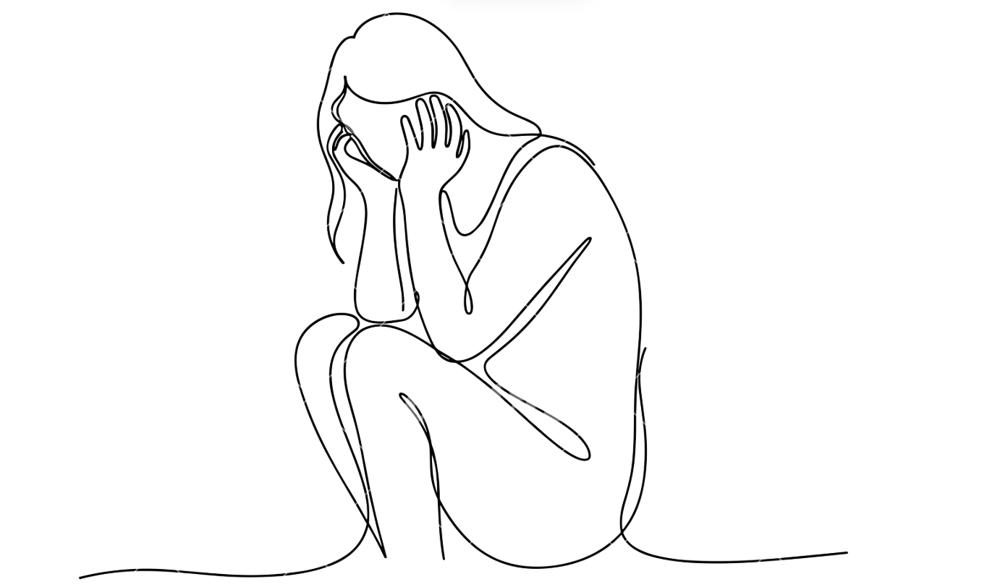

my heart has suddenly leaped up my wind pipe and snugly found a comfortable spot to rest in my throat. it won't budge. now, i can't tell if it has turned into a knot or a hole, but all i know is that it's uncomfortable and it has to go. in case you noticed, yes, there are a lot of metaphors that - for some abysmal reason - my panic-stricken brain is readily conjuring up right now, but we can unpack them later.
seriously though, there's no reason for me to feel like this.
i am drowning in my own apprehensions about life and i am probably one of the most privileged people i know. those two things practically should *not* be possible at the same time, yet here we are. supportive parents. loving sister. decent academics. good social life. J-O-B lined up. what else could i ask for? if i weren't me, i would be mad at me for complaining. hell, i *am* mad at myself for complaining.
what is that exercise they tell you to do to get your senses anchored? 5 things you can see, 4 things you can touch, 3 things you can hear, or something?
okay, i see this laptop. i see my fingers frantically typing. i see my half-done exam notes hastily put away because i couldn't get myself together. i see my unnecessarily bright table lamp flashing at me and my little scientist figurine on my table.
next is touch. keys on my laptop. face. paper. the timber my table is made of -
this sh*t is not working.
deep breaths, maybe? that usually seems to work in those tv commercials about salt in your toothpaste, right? but box breathing, 4-7-8 breathing, or nadi shodhana pranayam - you name it, and i have probably tried it. i don't know if it is my inherent lack of confidence in these techniques or simply my adamant laziness, but it just never clicks for me.
what is making me feel this way? what is causing me so much stress and - i hate giving it a name because labeling it means admitting it is real but here goes nothing - anxiety?
searching up "anxiety techniques" on Google Images (my brain is too overwhelmed right now to be cerebral enough to read the AI overview and come to coherent conclusions) retrieved a large question-mark image underscored by the words "question your thought pattern" on my screen. at least, that's the one that caught my eye. blame it on my practical desi upbringing or my cut-throat academic environment, but rationalizing always seems to be the solution i gravitate towards. ironically, calling up my mom means hearing the same advice about deep breaths and meditation and yoga. thanks mom, but let's leave things like self-care and all that jazz to those western people, shall we? (and before you start typing in all caps, yes, meditation and the quest for inner peace originated in India but please bear with me here)
let's look at the facts, now:
- i have a final tomorrow that is worth 40% of my grade (shudder).
- it's at 8 am (SHUDDER).
- i have two more homework assignments to get through which will take about 30 minutes each. and then i can sleep.
- it's 11:11 PM right now (make a wish). which means i can only sleep at 1 am. which means i get less than 6 hours of sleep. that's bad.
- i need a 65 to get an A (thank god for extra credit). so i will probably will only do the things i can do until 12 AM. the rest of it can go to hell.
- i know how to solve almost all the questions and have all the necessary notes.
- i have 3 hours to do the exam. that's a lot of time to figure out stuff lol.
hey, that's not so bad. it's not so bad. that was pretty helpful actually.